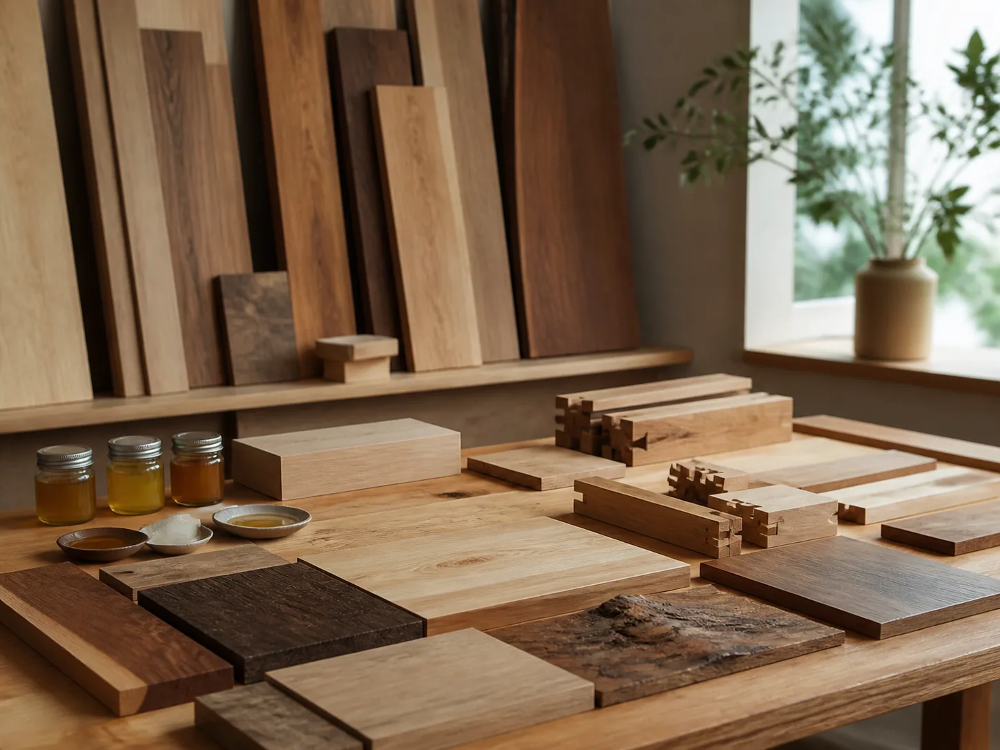
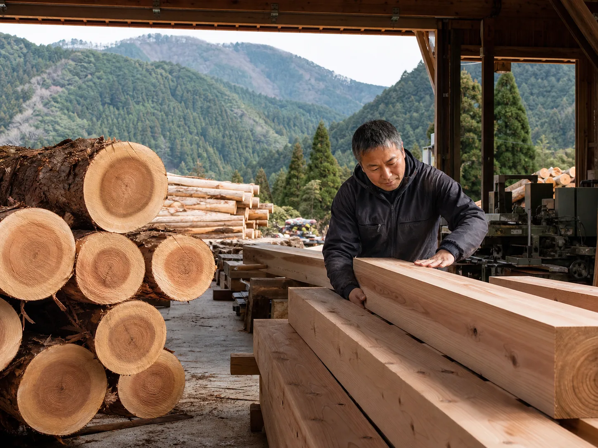
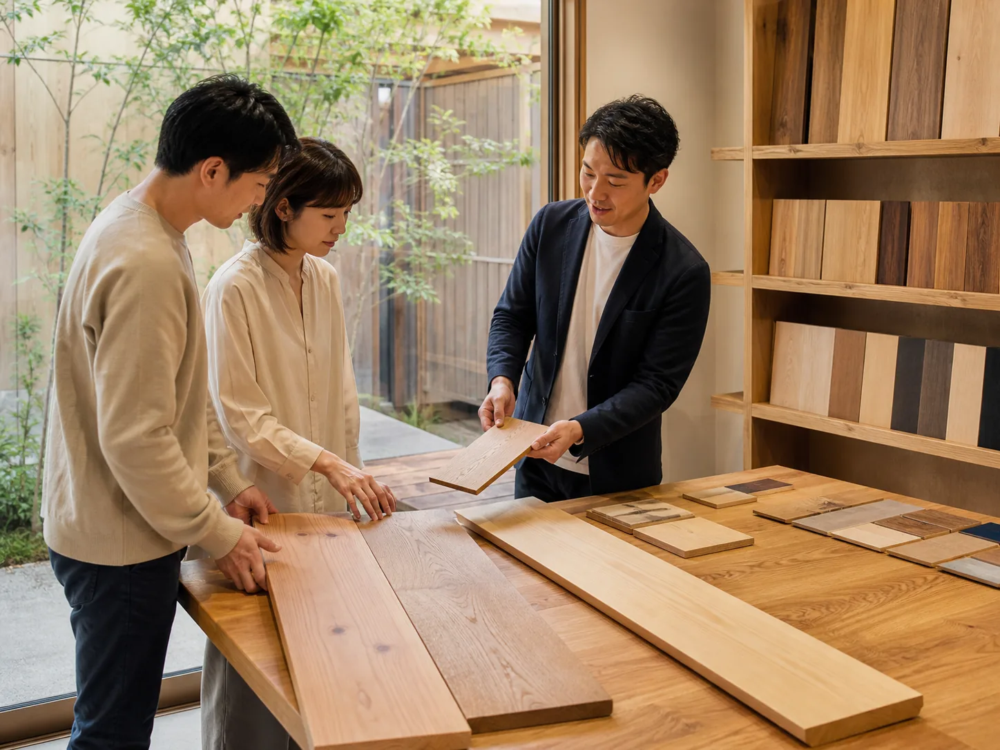
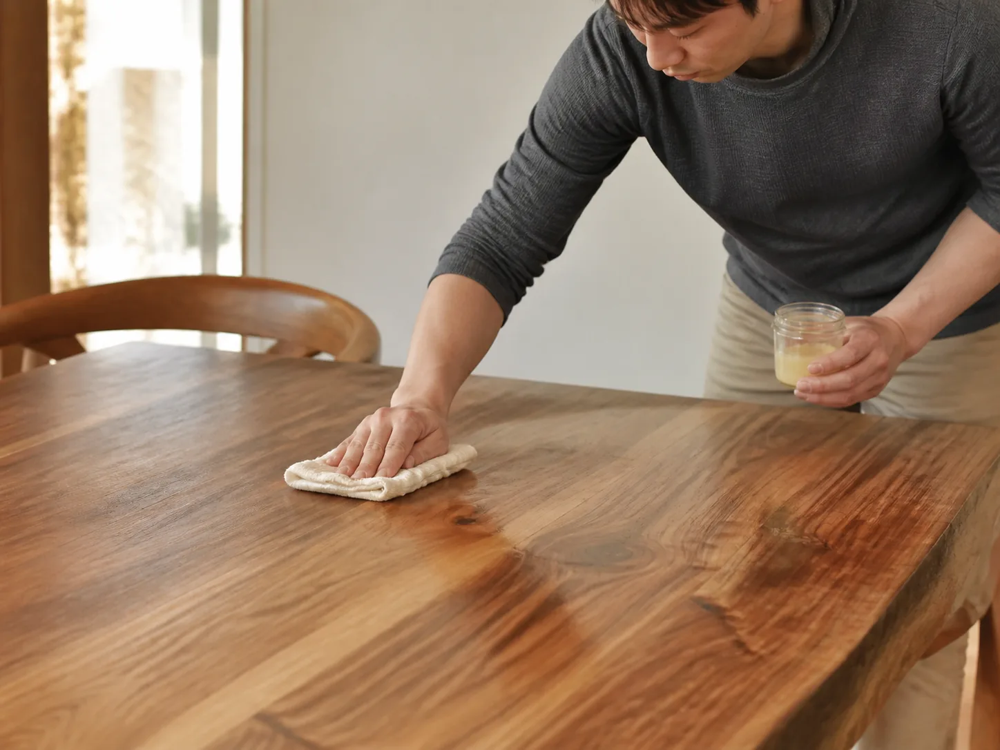

SERVICE 04
自然素材・木材コーディネート
産地から選ぶ無垢材と自然塗料で、経年美化する住まいへ。「紡ぐ」の名の通り、素材選びから丁寧に向き合います。

OVERVIEW
木を「紡ぐ」ように、素材から住まいをつくる
産地・樹種・塗装方法まで、ショールームで実際に手に取りながら選べる木材コーディネートサービス。新築・リフォームどちらのお客様にもご利用いただけます。年月とともに味わいを増す、経年美化する住まいをご提案します。

産地の見える国産材
国内の提携製材所から仕入れる、産地とストーリーの分かる木材を使用します。

ショールームで実物確認
樹種・塗装サンプルを実際に手に取って比較しながら選定いただけます。

自然塗料によるお手入れ
蜜蝋やオイル系の自然塗料を使用し、再塗装もご家庭で行いやすくします。
SCOPE
対応内容
- 構造材・フローリング材の選定
- 造作家具・建具の木材コーディネート
- 自然塗料・漆喰壁の提案
- ショールーム見学・サンプル貸出
- メンテナンス方法のご案内
PRICE
料金目安
無垢フローリンググレードアップ
新築時オプション
+30万円〜
造作家具コーディネート
1点あたり
15万円〜
自然塗料仕上げ変更
全面
+20万円〜
※金額はあくまで目安です(デモ表示)。新築・リフォームのプランに応じてご提案します。